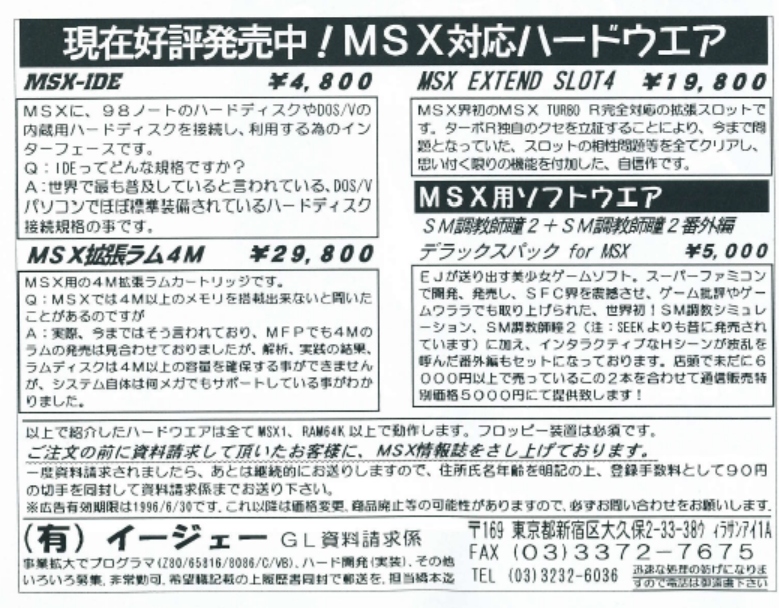
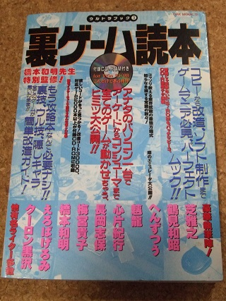
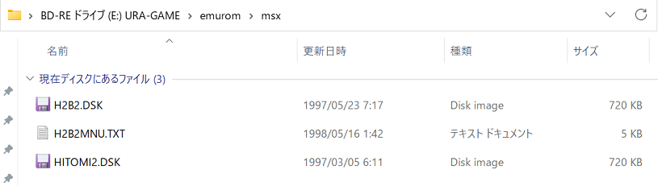
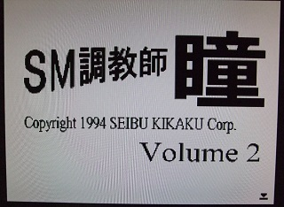

瞳の秘密
スーパーファミコンの「瞳」という同人ソフトがあり、その開発にMSXが使われていたというある筋では有名な話があります。一方で、スーパーファミコン版だけではなくMSX版もあるという噂もあるようです。
■ソース その１：ウィキペディア
SM調教師瞳
”実はMSX版が存在しているが、元々絵や音楽等多くの部分がMSXで開発されたことから、それを利用して動作する程度の物である為、MSX版からの移植という説は事実ではない。しかし、既に販売されたオリジナルバージョンからMSX版へ再移植をして販売する予定はあった。”
「MSX版が存在している」と書きつつ、「MSX版へ再移植をして販売する予定はあった」というよく分からない書き方になっています。
■ソース その２：ゲームラボ 1998年6月号 広告

”店頭でいまだに6,000円以上で売っているこの２本”
果たしてどこの店頭で売られていたのか謎ですが、確かに「SM調教師瞳＋SM調教師瞳２番外編」が販売されていたようです。
■ソース その３：Baboo掲示板
いろんな情報掲示板 (baboo.net)
”MSX版の「SM調教師瞳2」が同梱されている所などはご愛敬ですが、”
とりあえず「裏ゲーム読本」という本に収録されているようです。特別監修として名前が載っている方は確かに例の方です。
と、いうことで早速入手して確認してみました。

本文を読む限りはMSX版の瞳について特に触れられていないのですが、CD各コーナー紹介に「謎の同人ソフト・・・それも昔の・・・だと思います」とだけ記述がありました。
CDを確認してみると・・・

HITOMI2.DSKなるものが収録されていました。ちなみにもう片方のイメージファイルは同じ本に収録されている「アニメプレーヤー」のサンプルのようです。
早速HITOMI2.DSKを起動してみると・・・

確かに、MSX版の瞳２が存在していたようです。
元ネタとして参考にさせて頂いたタカミチ様に感謝致します。